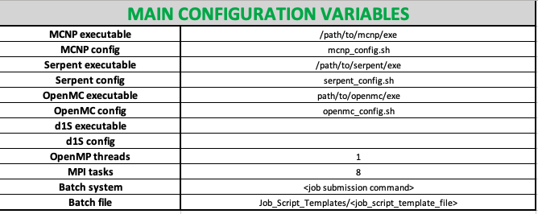
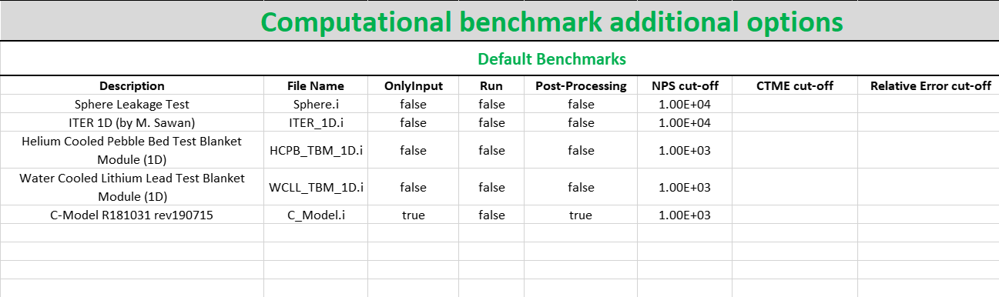
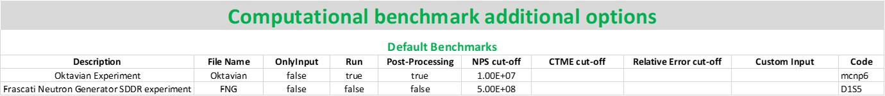
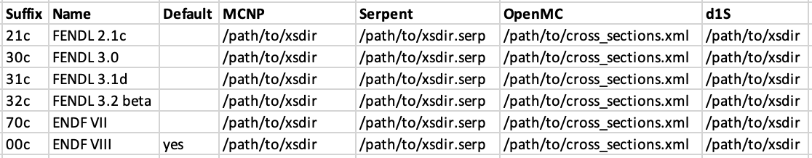
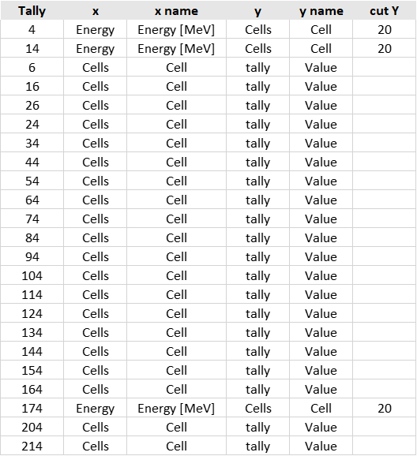
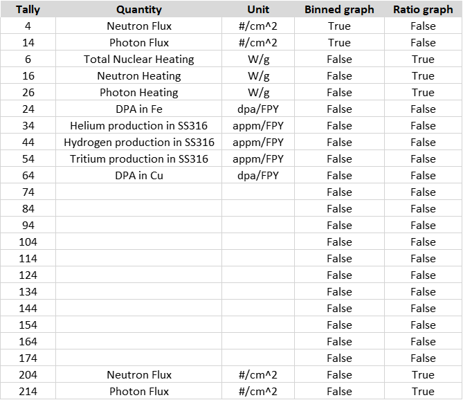

Configuration
All configuration files are included in the <JADE_root>\Configuration directory.
In principle, the general user should only operate on the Main Configuration file, while
all other configuration files simply guarantee an additional level of personalization for the user.
Note
In case of user-defined benchmarks suitable Benchmark run configuration and Computational benchmark post-processing configuration files need to be produced.
Note
Every time a new D1S library is added to the user xsdir, in order to use it in JADE a specific sheet must be added in the Activation File.
Main Configuration
The most important configuration file is <JADE_root>\Configuration\Config.xlsx.
This is the only configuration file that the user must modify before operating with JADE.
Herafter, a description of the different sheets included in the file is given.
MAIN Config.
{kind=link}
This sheet contains the JADE ambient variables:
- MCNP executable
Path to the MCNP executable.
- MCNP config
Name of the config shell script containing environment variables required for running MCNP on UNIX. By default this file should exist already in the same folder as the Config.xlsx named mcnp_config.sh. The main purpose of this file is to allow for switching modules and environment variables at runtime when performing multi-code runs, as it may be the case a different compiler is required for a specific code. If running either single or multiple codes with a correctly configured enviroment, or if running on windows, this file can be left empty.
- Serpent executable
Path to Serpent executable.
- Serpent config
Name of the config shell script containing environment variables required for running Serpent on UNIX. see MCNP_config above for more information.
- OpenMC executable
Path to OpenmC executable.
- OpenMC config
Name of the config shell script containing environment variables required for running OpenMC on UNIX. see MCNP_config above for more information.
- D1S executable
Path to D1S executable (not yet implemented).
- D1S config
Name of the config shell script containing environment variables required for running D1S on UNIX. see MCNP_config above for more information (not yet implemented).
- OpenMP threads
Specifies the number of threads to use when running OpenMP executables
- MPI tasks
Specifies how many cores to use when executing an MPI tasks
- Batch system
The command used to run a batch job on the current system, for example LLsubmit for LoadLeveler or sbatch for SLURM. This command is required to run any calculation as a job, the code will default to a command line run if left blank.
- Batch file
Template of the job submission script to be utilised on the users chosen system. This should match the command provided for the Batch system variable. Several default job submission scripts are provided in the Job_Script_Template folder in the Configuration folder. Examples of the layout of these templates are detailed below.
Computational benchmarks
{kind=link}
This table collects allows to personalize which computational benchmarks should be included in the JADE assessment. Each row controls a different benchmark, where the following options (columns) are available:
- Description
This is the extended name of the benchmark, this name will appear in specific outputs of the post-processing.
- Folder Name
Name of the folder containing input files for all codes. These need to be placed in
<JADE root>\Benchmarks inputs.- OnlyInput
When this field is set to
Truethe benchmark input is only generated but not run. This can be useful when the user wants to run the benchmark on a different hardware with respect to the one where JADE is being used.See also
Note
This input has priority with respect to the ‘Run’ one, i.e., if both are set to True, the inputs will be only generated and not run.
- MCNP
Runs the benchmark input for MCNP if set to
True. This allows to customize the selection of benchmarks to be run during an assessment or avoid to re-run benchmarks that were already simulated in the past.- Serpent
As above, runs the benchmark input for Serpent if set to
True.- OpenMC
As above, runs the benchmark input for OpenMC if set to
True.- D1S
As above, runs the benchmark input for D1S if set to
True(NOT YET IMPLEMENTED).- Post-Processing
this field works exactly as the
Runone but for the post-processing operations. Post processing is performed for any code marked asTruein the corresponding row.- NPS cut-off
this is equivalent to the
NPSentry in the MCNP STOP card. It sets a maximum amount of histories to be simulated. Only integers are allowed.- Custom input
New in version v1.3.0: This columns allows to provide custom inputs to the different benchmarks. For the moment, this is used only in the Sphere Leakage and Sphere SDDR benchmarks where, if a number n is specified, this will limit the test to the first n isotope and material simulations (useful for testing).
Experimental benchmarks
{kind=link}
The structure of the sheet is exactly the same as the Computational benchmarks one. Nevertheless, in this table are indicated the settings for the experimental benchmarks.
Libraries
{kind=link}
This sheet contains the paths of nuclear data library index files for the various codes.
Warning
Do not use invalid filename characters (e.g. "\") in the names assigned to the
libraries!
Activation File

The <JADE_root>\Configuration\Activation.xlsx file stores all the reactions available in the different versions of the D1S-UNED
activation libraries. For each library a sheet needs to be added having as name the
suffix used in the xsdir file for the library. Only three columns in the table are mandatory
and these are the Parent, MT and Daughter ones.
Benchmark run configuration
for the Sphere Leakage and for the Sphere SDDR benchmarks ad-hoc run
configuration file are defined and can be found in the
<JADE_root>\Configuration\Sphere and <JADE_root>\Configuration\SphereSDDR
folders. These are .csv files that control for each element or typical material
the following run parameters:
- NPS cut-off
specifies the number of particle histories to be set in the MCNP STOP card.
- CTME cut-off
specifies the total computer time to be set in the MCNP STOP card.
- Relative Error cut-off
specifies a precision limit for a tally to be set in the MCNP STOP card.
- Density [g/cc]
specifies the density to be considered in the sphere for the isotope/typical material.
- Name
name to be used during post-processing (e.g. Hydrogen or SS316L(N)-IG)
- Symbol
element symbol (e.g. H) or material number (e.g. M400). In case of material number the id must be consistent with the ones indicated in the
<JADE_root>\Benchmarks inputs\TypicalMaterialsfile.- Z
[Only for elements] element number (e.g. 1 for H).
- Let Override
If True, the general settings specified in the Main Configuration file for the STOP card are considered to have priority on the specific ones. If False, the specific parameters are not ovveridden by the general ones.
Computational benchmark post-processing configuration
It is possible to control (to some extent) the post-processing of each benchmark via its
specific configuration file. These files are located in the <JADE_root>\Configuration\Benchmarks Configuration
folder and their name must be identical to the one used in the File Name field in the main configuration file
(using the .xlsx extension instead of the .i). These files are available only for computational benchmarks,
since the high degree of customization needed for an experimental benchmark makes quite difficult to
standardize them. While computational benchmarks can be added to the JADE suite without the need for additional
coding, this is not true also for experimental one.
The files contain two main sheets, that respectively regulate the Excel and the Word/PDF (i.e., Atlas) post-processing output.
Excel
{kind=link}
This sheet regulates the Excel output derived from the benchmark. It consists of a table where each row regulates the output of a single tally present in the MCNP input.
Hereinafter a description of the available fields is reported.
- Tally
tally number according to MCNP input file.
- x, y
select the binnings to be used for the presentation of the excel results of the specific tally. Clearly, the binning should have been coherently defined in the MCNP input too. MCNP allows different types of tally binning, they can be accessed using the tags reported in the table below.
Allowed binnings Admissible x and y
Energy
Cells
time
tally
Dir
User
Segments
Multiplier
Cosine
Cor A
Cor B
Cor C
As a result of the selected x and y option, the results of the post-processed tally will be display in a matrix format. In case only a single binning is defined in the MCNP input, the
tallykeyword should be used to signal to JADE to just to print the results in a column format.Important
The main direction of an Excel file is considered to be the vertical one, which is the preferred scrolling direction. For this reason, the x direction is associated with the vertical direction in an Excel file and the y with the horizontal one.
Warning
No more than two binnings should be defined for a single MCNP tally due to the limitation of having to represent 2-D output. JADE may be able to to handle tallies with more than 2 binnings if some of them are constant values.
Tip
If a 1D FMESH is defined in the MCNP input, JADE will automatically transform it to a “binned” tally and handle it as any other tally using the
Cor A,Cor BorCor Cfield.- x name, y name
These will be the names associated to the x and y axis printed in the excel file.
- cut Y
The idea behind JADE is to produce outputs that are easy to investigate simply by scrolling and concentrate on the main results highlighted through colors. Having a high number of bins both in the x and y axis may cause a problem in this sense, forcing the user to scroll on both axis. For this reason, a maximum number of columns can be set to solve this issue. This will cause the tally results not to be printed as a unique matrix but as sequential blocks each with a number of columns equal to cut Y.
Atlas
{kind=link}
This sheet regulates the Atlas output (Word/PDF) derived from the benchmark. It consists of a table where each row regulates the output of a single tally present in the MCNP input. Hereinafter a description of the available fields is reported.
- Tally
tally number according to MCNP input file.
- Quantity
Physical quantity that will be plotted on the y-axis of the plot. For the x-axis the one specified in the Excel sheet under x will be considered. The quantity selected for plotting will always be the tallied quantity.
Important
when two binnings are specified in the Excel sheet, a different plot for each of the y bins will be produced. For example, let’s consider a neutron flux tally binned both in energy (selected as x) and cells (selected as y). Then, a plot showing the neutron flux as a function of energy will be produced for each cell. On the contrary, if the cell binning is assigned to x and the energy one to y, a plot showing the neutron flux as a function of the cell would be produced for each energy interval.
- Unit
Unit associated to the Quantity.
- <Graph type>
Different columns can be added where it can be specified if a plot in the style indicated by the column name should be generated (
true) or not (false). The available plot styles are Binned graph, Ratio Graph, Experimental points and Grouped bars.See also
Plots Atlas for an additional description of the available plot styles.
Experimental benchmark post-processing configuration
SpectrumOutput class benchmarks configuration files
When a binned-values data benchmark is inserted (see Insert binned-value plot experimental benchmarks), a Configuration file
has to be defined based on the desired final plot result. The filepath is expected to be:
<JADE_root>\Configuration\Benchmarks Configuration\<BenchmarkName>.xlsx. The Excel file
must have the following structure:

Example of Oktavian configuration file structure
The Atlas will contain one plot for each tally of the MCNP input, for each MCNP input if multiple runs are foreseen. each column corresponds to some details in the resulting plot, for instance:

Example of Oktavian plot with all the corresponding configurations
Again, in case of multiple runs each tally number must represent the same quantity in all MCNP inputs for consistency of the parameters in the configuration file. If a tally in the configuration file is not present in a MCNP input file (e.g. a spectrum is collected in all MCNP inputs except one), it will be skipped. If a tally is present in a MCNP input but experimental data is not available for that tally, it will be skipped. Obviously, the quantity and the units in the configuration file and in the experimental data file must be consistent.
The C/E X quantity intervals column must be defined as a series of numbers separated
by a -, which will be the upper values of the energy bins used for the interpolation and
the printing of C/E tables:

Example of C/E tables for SpectrumOutput class
The values in the column Y label must be different for each tally in the MCNP input
and should identify univocally the plotted quantity
MultipleSpectrumOutput class benchmarks configuration files
All the considerations made in Experimental benchmark post-processing configuration still hold, but the Excel file must have a different structure:

Example of FNS-TOF configuration file structure
Every tally an its parameters from every MCNP input file must be listed as a row in the
configuration file. A group number must be assigned to each row. Tallies belonging to the same group
will be plotted together. The user should pay attention on the fact that only plots
with the same quantities in both X and Y axis and with the same units are consistent.
Groups should be numbered starting from 1 to the last group number and their number corresponds
to their position in the Atlas. In the example above, for instance, all tallies in
each MCNP input are plotted together (neutron leakage spectra at different detectors’ locations’),
but in principle also tallies from different MCNP inputs can be plotted together.
In the following, an example of a resulting plot and the meaning of the parameters from the configuration file are shown:

Example of FNS-TOF plot and parameters
The title of the plot can be personalized in the code, the default is the name of the benchmark +
the name of the quantity.
The combination of Particle, Quantity and Y label must univocally identify the tally
inside the group, i.e. no tally can have the same Particle, Quantity and Y label
parameters at the same time.